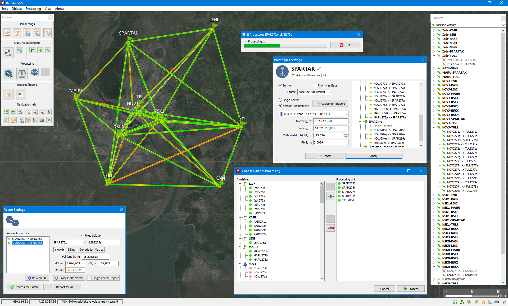
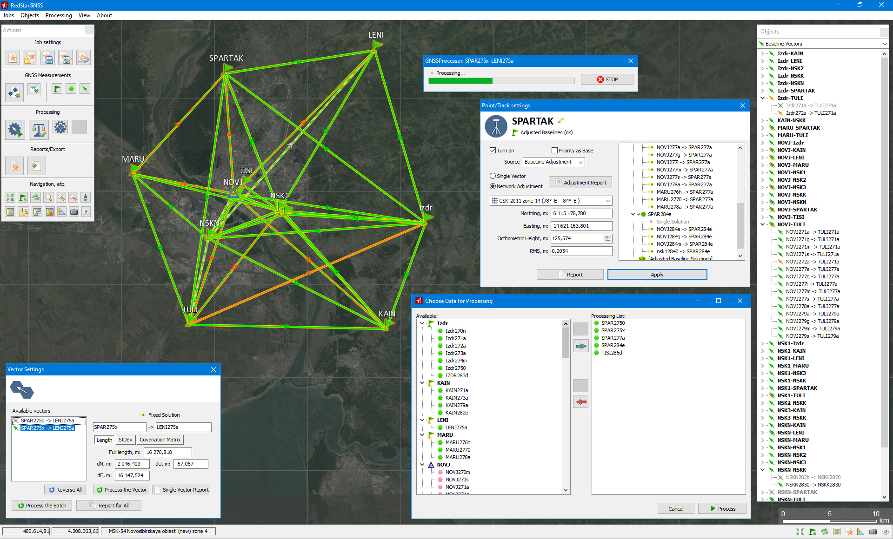

Hi there!My name is Stanislav, I am a specialist in domains of geodesy, geo-engineering, photogrammetry. My experience covers field geodesy, teaching, scientific research and software development. On this online CV page you can find some information about my skills, employment, education and porfolio.
Stanislav Shevchuk, Ph.D.
| Name: | Stanislav Shevchuk | |
| Phone: | +49 1521 0440 245 | |
| Email: | stanislav.o.shevchuk@gmail.com | |
| LinkedIn: | stanislav-shevchuk-192ba5117 | |
| Git Hub: | StasPP | |
| Research Gate: | Stanislav-Shevchuk | |
| Instagram: | stanislav.shevchuck |
Skills
-
m
SCIENCE
Scientific work on engineering geodesy, GNSS/GIS and photogrammetry (development of methods and models, writing scientific papers, providing experiments and test field measurements, conducting projects); teaching and mentoring skills.
-
d
SOFTWARE DEVELOPMENT
Intermediate skills in Python and MatLab; Advanced development skills Delphi/Lazarus codding (Desktop Apps for Windows and Linux; DLL programming); MS SQL Codding skills (requests, views, stored procedures, DB integration, BI-tools); Junior skills in JavaScript, nodeJS, React, Html, CSS.
-
c
ENGINEERING
Practical skills (field and aerial survey) in geodetic support with GNSS, total stations, UAV data processing, etc.
-
f
LANGUAGES
English: working proficiency (C1), German: working proficiency (B2), Russian, Ukrainian: native (C2).
-
p
SOFT SKILLS
Communication, negotiations experience, teamwork, adaptability, critical thinking, time management.
-
b
HOBBIES
Music, science, sports (skiing, big tennis, boxing, yoga), history, foreign languages.
Work experience
-
Now-2023
Institute of Engineering Geodesy University of Stuttgart (Stuttgart, Germany)
Research Associate
Scientific research: object positioning and tracking with image-assisted total stations within RP16-2. Teaching and mentoring: geomonitoring; terrestrial multisensor data acquisition; kinematic measurement systems.
-
2022
GMCS Verex (St. Petersburg, Russia)
IT Consultant
Integration of ERP system MS Dynamics 365 for enterprise-level company, MS SQL codding, data analysis, BI report services, MS VS Integration tools, SoW writing, negotiations.
-
2021-2018

Russian Institute of Radionavigation and Time (St. Petersburg, Russia)
Senior Scientist
Participation in scientific and manufacturing projects. Mathematical modelling, DLL and desktop software developing, GNSS receivers field tests, public performance.
-
2022-2017
Aerosurveys CSJC (EM Surveys) (Novosibirsk, Russia)
Senior Sceintist (part-time, remote)
Desktop and DLL GIS software development for aerial and ground navigation and geodetic support.
-
2018-2009
Siberian Transport University (Novosibirsk, Russia)
Senior lecturer (part-time)
Teaching and mentoring (Geodesy and remote sensing disciplines)
-
2018-2009

Siberian Research Institute of Geology, Geophysics and Mineral Resources (Novosibirsk, Russia)
Head of a Laboratory
Research on geodetic support of geophysics, management of scientific project, patents writing, desktop application development, field geophysics and geodesy.
Education
-
Main education
2010 - 2013 Siberian State University of Geosystems and Technologies (Novosibirsk, Russia) PhD in Earth sciences: Remote Sensing, photogrammetry 2005 - 2010 Siberian State University of Geosystems and Technologies (Novosibirsk, Russia) Engineer degree in aerial photogrammetry -
Additional education
2024 - 2025 Language Center University Stuttgart (Stuttgart, Germany) German as a foreign language course C1.1 2022 - 2023 MASA Internship (Be'er Sheva, Israel) Full stack Web-Development Internship 2021 Google Coursera (online) Project Management Course 2014 Roscosmos, Russian Space Systems (Moscow, Russia)4th International School on Satellite Navigation
Selected Portfolio
Scientific work:
- Registered software and patented inventions:
- Software RoutNav for navigation and geodetic support of geophysics [more info in the publication]
- Software for multipath analysis and mitigation using single receiver data [more info in the publication (RUS)]
- Patented inventions (2) on photogrammetric devices for aerial navigation [considered in the publication]
- Scientific projects in domains:
- GNSS (receiver development, PPP tests, multipath mitigation, kinematic measurements on vehicles/vessels etc.) [e.g. FIG report 74]
- Close-range photogrammetry (e.g. stereo positioning with Image assisted total stations [publication is is progress])
- Technologies of geodetic and photogrammetrical support for geology and geophysics [more info in the publication]
- 50+ Scientific papers (including articles, tech reports, monograph and textbook). Some of them are available on my Research Gate page
Registered commercial software:
- RoutNav Software Package for navigation and geodetic support of geophysics [more info in the publication] including additional utilities and RouteEditor application for ground TEM geophysics [more info in the publication]
- GNSS Processing and Adjustment Software RedStarGNSS [available here (RUS)]
Other achievements:
- Geodetic field experience on more than 6 objects as a geodesist
- Teaching and mentoring experience – engineering geodesy, geomonitoring, and GIS (over 5 years total practice)
- Successful MS D365 integration experience as an IT consultant and junior data analyst
-
Image-assisted total stations stereo measurements
within research project IntCDC RP-16:
Spider Crane Robotic Platform for On-Site Construction
Released/published: 2025
Developed for: University Stuttgart
Language: PythonRouteNav Navigation Software
Navigation software for manned aerial geophysics
Released: 2015 (still supported)
Developed for: EM-surveys GSJC
Language: Delphi
Copyright (2015)RouteEditor: mission planner
Software for geodetic planning and analysis ground and aerial geophysical survey in RouteNav Software package
Released: 2017 (still supported)
Developed for: EM-surveys GSJC
Language: DelphiGeodetic Tools
Various software for geodetic support of geologic and geophysical survey
Released: 2012-2018
Developed for: EM-Surveys, Siberian Research Institute of Geology, Geophysics and Mineral Resorces
Language: Delphi- 
RedStar GNSS
GNSS processing software (based on RTKLib)
Released: 2024
Developed for: АО "Землемер"
Language: Delphi
Copyright (2024)DiffCalc
Scientific software for GNSS multipath analysis
Released: 2014
Developed for: Siberian State University of Geosystems and Technologies
Language: Delphi, MatLab
![Image-assisted total stations stereo measurements within research project IntCDC RP-16: Spider Crane Robotic Platform for On-Site Construction Released/published: 2025 Developed for: University Stuttgart Language: Python RouteNav Navigation Software Navigation software for manned aerial geophysics Released: 2015 (still supported) Developed for: EM-surveys GSJC Language: Delphi Copyright (2015) RouteEditor: mission planner Software for geodetic planning and analysis ground and aerial geophysical survey in RouteNav Software package Released: 2017 (still supported) Developed for: EM-surveys GSJC Language: Delphi Geodetic Tools Various software for geodetic support of geologic and geophysical survey Released: 2012-2018 Developed for: EM-Surveys, Siberian Research Institute of Geology, Geophysics and Mineral Resorces Language: Delphi  RedStar GNSS GNSS processing software (based on RTKLib) Released: 2024 Developed for: АО "Землемер" Language: Delphi Copyright (2024) DiffCalc Scientific software for GNSS multipath analysis Released: 2014 Developed for: Siberian State University of Geosystems and Technologies Language: Delphi, MatLab](images/rp16_2.png){kind=link}
{kind=link}
{kind=link}
{kind=link}
{kind=link}
{kind=link}